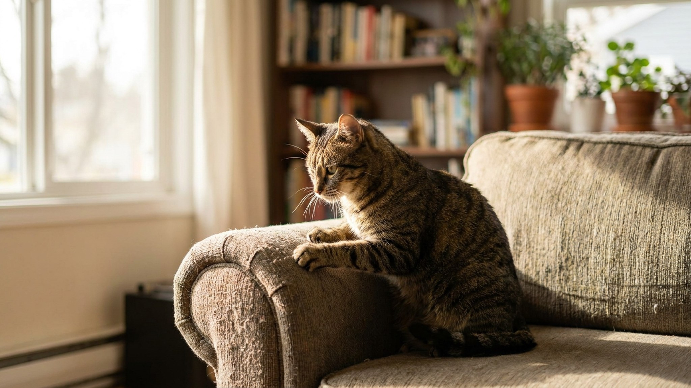

Кошка дерёт диван: 5-шаговый план и когтеточки, которые работают

4 июня 2026 · 8 минут чтения · Поведение · Когти · Кошки
Царапание — не вредность и не протест. Это физиологическая необходимость: кошки царапают для сброса мёртвых слоёв когтя, растяжки мышц передних лап и плечевого пояса, а главное — для маркировки территории феромонами из желёз на лапах. Запретить невозможно. Но перенаправить — реально. По данным AAFP, отказ от когтеточки при наличии правильно подобранной альтернативы встречается менее чем у 5% кошек. Пять шагов, которые работают.
🐾 Питомец ведёт себя странно?
AnimaLife расшифрует поведение кошки и собаки и подскажет, что делать. Попробуйте бесплатно прямо в мессенджере.
Открыть в Telegram → Открыть в MAX →
Почему кошка выбирает именно диван
Кошка выбирает объект для царапания не случайно. Диван привлекателен по нескольким причинам:
- Текстура: плетёная или ворсовая обивка идеально «сопротивляется» когтям — создаёт нужное сенсорное ощущение и физически сдирает мёртвый роговой слой.
- Расположение: диван в центре жизненного пространства. Кошки метят феромонами места с высоким социальным трафиком — там, где их запах увидят все.
- Вертикальность и высота: диван позволяет тянуться во весь рост. Это критично: полная растяжка позвоночника и плечевого пояса — одна из функций царапания.
- Ваши феромоны: ваш запах пропитывает диван. Кошка добавляет к нему свой — это коммуникация, а не порча.
Когтеточка, которая не учитывает эти параметры, будет проигнорирована. Именно поэтому маленький столбик джута в углу не работает — он не конкурирует с диваном.
Шаг 1: Понять тип царапания вашей кошки
Кошки делятся на два основных типа по предпочтениям:
- Вертикальные скрэтчеры — тянутся вверх, царапают стены, дверные косяки, диваны (боковины). Таким нужна когтеточка высотой минимум 90 см — чтобы кошка могла полностью вытянуться.
- Горизонтальные скрэтчеры — предпочитают царапать пол, ковёр, нижние части мебели. Таким нужны горизонтальные коврики из картона, джута или ковролина.
Около 70% кошек — вертикальные скрэтчеры, 30% предпочитают горизонтальные поверхности. Часть кошек использует оба формата. Наблюдайте за своей кошкой 3-4 дня, прежде чем покупать.
Шаг 2: Выбрать правильную когтеточку
Критерии когтеточки, которую кошка выберет сама:
- Высота: не менее 90-100 см для взрослой кошки. Большинство продающихся моделей — 50-60 см. Это недостаточно. Кошка дотянется до нужной высоты на диване.
- Устойчивость: не качается, не падает при активном использовании. Неустойчивая когтеточка пугает кошку — она уйдёт на диван.
- Материал: сизаль (грубая верёвка) — лучший вариант. Создаёт правильное сопротивление и позволяет снять роговой слой. Ковролин — второй по популярности. Картон — хорошо для горизонтальных скрэтчеров, но быстро изнашивается. Дерево — отлично для кошек, которые любят натуральные поверхности.
- Расположение: рядом с местом сна (кошки часто царапают сразу после пробуждения) и рядом с любимой мебелью — на первом этапе.
Дополнительно: мебельные стволы-дерева (cat tree) высотой 150+ см решают проблему сразу — когтеточка + место для отдыха + территориальная вышка. Инвестиция окупается сохранностью мебели.
Шаг 3: Сделать диван непривлекательным
Пока кошка не переключилась на когтеточку, диван нужно физически защитить:
- Двусторонний скотч на проблемные участки — кошки не переносят липкую текстуру. Специальные ленты (Sticky Paws, Trixie) не оставляют следов.
- Силиконовые накладки на когти (Soft Claws/Soft Paws) — насадки на когти, которые не позволяют царапать. Гуманны, безопасны, держатся 4-6 недель. Минус: требуют терпения при надевании.
- Защитные накладки на мебель — прозрачные ПВХ-панели на углы и боковины. Покрывают самые уязвимые места.
- Цитрусовые спреи — кошки не любят запах цитруса. Самодельный (вода + лимонный сок) или магазинный (не содержащий фенола и эфирных масел, токсичных для кошек).
Важно: защита дивана работает только вместе с привлекательной альтернативой. Без альтернативы кошка найдёт другой объект.
Шаг 4: Сделать когтеточку привлекательной
Просто поставить когтеточку недостаточно. Нужно её «продать»:
- Кошачья мята — натереть поверхность когтеточки или использовать спрей. 70% кошек реагируют позитивно (у остальных нет чувствительности к непеталактону — это генетическая особенность).
- Серебристая лоза (Tatarian honeysuckle) — альтернатива для кошек, не реагирующих на мяту.
- Игра у когтеточки — водите удочкой рядом с когтеточкой, поощряйте любой контакт лап с поверхностью. Лакомство при использовании — классическое позитивное подкрепление.
- Никогда не берите лапы кошки и не водите ими по когтеточке насильно — это создаёт негативную ассоциацию.
Шаг 5: Последовательность и терпение — 2-3 недели
Переключение занимает время. Реалистичный таймлайн:
- Дни 1-3: кошка исследует новый объект, возможно царапает 1-2 раза.
- Дни 4-7: начинает использовать регулярно при наличии привлечения (мята, игра).
- Дни 7-14: формируется устойчивый паттерн.
- День 14+: постепенно убираете защиту с дивана, когтеточку можно чуть сдвинуть от дивана (но не убирать далеко сразу).
Если прогресса нет за 2 недели — возможно, когтеточка не подходит по типу, высоте или материалу. Попробуйте другой формат.
Что точно не работает
Кричать и наказывать при виде царапания. Кошка не понимает «нельзя царапать диван» — она понимает «когда хозяин видит — надо остановиться». Результат: царапает только в ваше отсутствие.
Декларирование (удаление когтей) — операция запрещена в 43 странах мира, включая большинство стран Европы. В России не запрещена, но является ампутацией последней фаланги пальца. Последствия: хронические боли, изменение походки, поведенческие расстройства (агрессия, отказ от лотка). Никогда не делайте.
Когтеточка в «неудобном» месте — в чулане, на балконе, в туалете. Кошка не пойдёт специально. Когтеточка должна быть там, где кошка проводит время.
Сколько когтеточек нужно
Правило AAFP: одна когтеточка на кошку плюс одна запасная. При нескольких кошках — по одной на каждого плюс одна. Когтеточки должны быть в разных зонах квартиры: у места сна, у главного входа, рядом с любимой мебелью. Разнообразие форматов — вертикальные и горизонтальные — повышает вероятность, что кошка найдёт «свой» вариант.
🐾 Понравился разбор?
Подпишитесь на канал — каждый день разбираем по одному тревожному симптому у кошек и собак: что в пределах нормы, а когда пора к врачу. Подпишитесь, чтобы не пропустить разбор, который может спасти здоровье вашего питомца.
← Все статьи · Открыть AnimaLife в Telegram · RSS